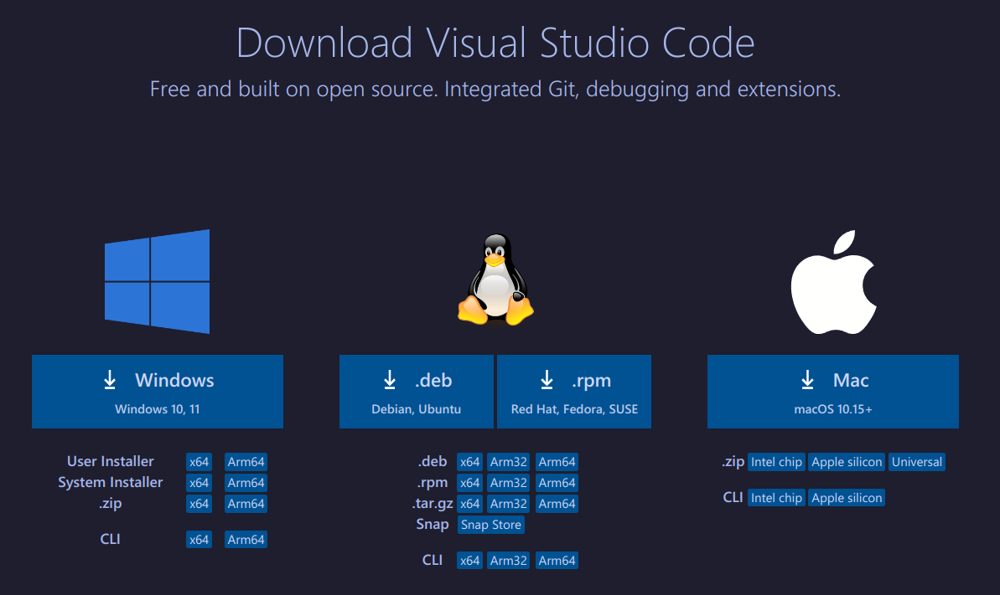

Setup
Setting up Visual Studio Code is very simple, depending upon your system it may vary, this guide will walk you through the setup process for some of the common operating systems
Download
VS Code is available to downlaod for Linux, MacOS and Windows. Download Visual Studio Code from the official website at https://code.visualstudio.com/download
Setup on Windows
- Download the .exe file
- Once the download is complete, run the installer file (.exe).
- Follow the installation instructions and choose an identifiable path for easier command-line access.
- After installation, you can launch VSCode from the start menu or the desktop shortcut.
Setup on MacOS
- Download the .dmg file
- Open the downloaded .dmg file.
- Drag Visual Studio Code to the Applications folder.
- After copying is complete, you can launch VSCode from the Applications folder.
Installing on Linux
Debian based distros
- Download the deb file
- cd ~/Downloads
- run sudo apt install ./{file}.deb
Fedora based distros
- Download the rpm file
- Double click the rpm file, it will open up with Discover(KDE) or Gnome Software(Gnome)
- Click install
Arch based distros, use the AUR to install
- run paru -S visual-studio-code-bin
Launching VS Code
Use the Application menu to launch VS Code